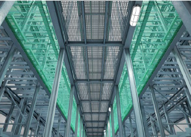
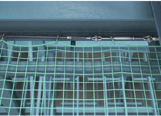

Anwendungsbereich
Hochregallagersicherungsnetze schützen Personen, deren Sturz nicht verhindert werden konnte, vor Verletzungen infolge tieferen Falles bei Arbeiten an Arbeitsplätzen und Verkehrswegen/Wartungsstegen von Hochregallagern.
Bestandteile des Hochregallagersicherungsnetzes
Hochregallagersicherungsnetze bestehen aus:
Einem Netz analog der Netzklasse B1 nach DIN EN 1263-1, jedoch einer Maschenweite von nicht größer als 45 mm, einer verstärkten Randeinfassung, einem Stahlseil mit einem Mindestdurchmesser von 6 mm, Verbindungsmitteln zwischen verstärkter Randeinfassung und Stahlseil (z. B. Karabinerhaken oder Schäkel) mit einer hinreichenden Zugfestigkeit und einem Seilspanner mit einer Zugkraft entsprechend dem Seildurchmesser.
Abmessungen
Die kleinste Fläche des Hochregallagersicherungsnetzes muss mindestens 2 m2 betragen. Bei rechteckigen Schutznetzen (Sicherheitsnetzen) muss die Länge der kürzesten Seite mindestens 1,0 m betragen.
Sturzhöhe
Hochregallagersicherungsnetze sind möglichst auf gleicher Höhe wie die zu sichernden Arbeitsplätze und Verkehrswege aufzuhängen, siehe Abb. 15. Die Höhendifferenz darf 0,10 m nicht überschreiten.

Abb. 15 Wartungssteg mit Hochregallagersicherungsnetzen

Abb. 16 Befestigung von Hochregallagersicherungsnetzen
Befestigung
Der Abstand zwischen den Aufhängepunkten, siehe Abb. 16, zur Befestigung des Stahlseiles z. B. mit Ringösen darf nicht größer als 1,0 m sein.
Hochregallagersicherungsnetze können z. B. mit Karabinerhaken oder Schäkeln an den Aufhängepunkten befestigt werden.
Als Karabinerhaken dürfen solche analog DIN EN 362 "Persönliche Schutzausrüstungen gegen Absturz - Verbindungselemente", DIN EN 12 275 "Bergsteigerausrüstung; Karabiner; Sicherheitstechnische Anforderungen und Prüfverfahren" oder nach DIN 5299 "Karabinerhaken aus Halbrunddraht, Runddraht und geschmiedet" verwendet werden, wenn deren Widerstände entsprechend der Befestigungsart ausreichen.
Für die Bemessung der Aufhängepunkte ist zusätzlich eine charakteristische Last P von 6 kN in Folge eines Sturzes unter einem Winkel von a = 45° anzunehmen.
Für die Bemessung der Bauwerksteile sind drei charakteristische Lasten von 4 kN, 6 kN und 4 kN an der ungünstigsten Stelle zu berücksichtigen (in Anlehnung an Abb. 8).
Der Abstand der Verbindungselemente zur Befestigung des Netzes an das Stahlseil soll 7 oder 8 Maschenweiten betragen.
Verbindungen
Werden Hochregallagersicherungsnetze miteinander verbunden, sind Kopplungsseile so zu verwenden, dass an der Naht keine Zwischenräume von mehr als 45 mm auftreten und die Netze sich nicht mehr als 45 mm gegeneinander verschieben können.
Überlappung
Werden im begründeten Einzelfall Hochregallagersicherungsnetze überlappend ohne Kopplungsseil verwendet, muss die Überlappung mindestens 1,0 m betragen.
Prüfung der Alterung
Die Unternehmerin bzw. der Unternehmer hat entsprechend § 3 Abs. 6 der Betriebssicherheitsverordnung die Prüffristen und den Prüfumfang für Schutznetze (Sicherheitsnetze) festzulegen. Mit einer Baumusterprüfung nach EN 1263-1 wird festgestellt, dass das betreffende Schutznetz (Sicherheitsnetz) bis 12 Monate nach Herstellung sicher verwendet werden darf. Sollen ältere Schutznetze (Sicherheitsnetze) eingesetzt oder weiterhin verwendet werden, ist sicherzustellen, dass das Mindest-Energieaufnahmevermögen den vom Hersteller angegebenen Wert nicht unterschreitet. Hierzu ist dann ein Nachweis zu führen, indem mindestens 5 Prüfmaschen aus einer Netzfläche von 1000 m2 an unterschiedlich UV-belasteten Stellen entnommen werden und durch eine zur Prüfung befähigte Person, z. B. bei einer geeigneten Prüf- und Zertifizierungsstelle oder bei dem Hersteller, geprüft werden. Die Prüfung des Mindest-Energieaufnahmevermögens hat nach DIN EN 1263-1 zu erfolgen und darf nicht länger als 12 Monate nach Herstellung des Schutznetzes (Sicherheitsnetzes) oder nach der letzten erfolgreichen Prüfung der Alterung zurückliegen.
Hochregallagersicherungsnetze haben vom Hersteller eingearbeitete Prüfmaschen, um die Festigkeitsminderung der Netzgarne infolge Alterung feststellen zu können.
Die Unternehmerin bzw. der Unternehmer sollen die Ergebnisse der Prüfung nachvollziehbar dokumentieren.